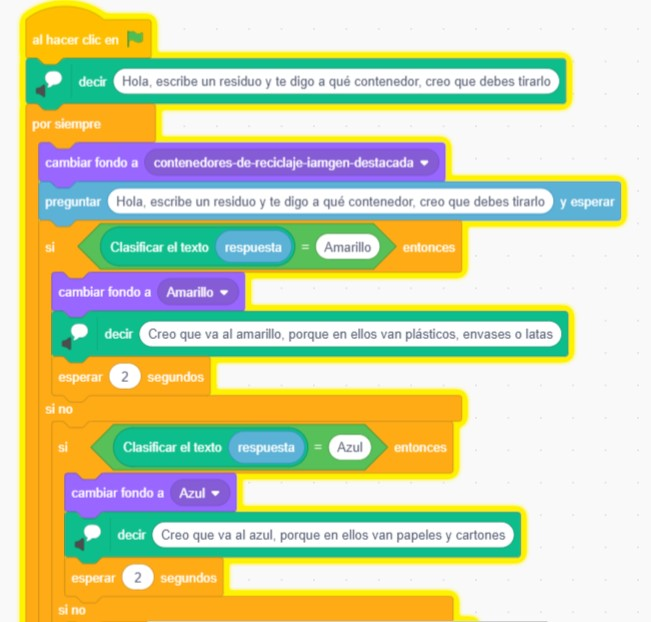
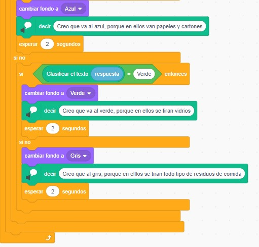

Programamos nuestra aplicación
La versión de Scratch 3.0. que se nos ha abierto ya tiene nuestro modelo de IA incorporado y los bloques que nos van a ayudar a programar nuestro modelo de reciclaje.
Lo primero que necesitamos es crear nuestros 5 fondos para el juego:
- Nuestro primer fondo para cuando el juego de comienzo, podemos utilizar el de la ciudad que aparece en Scratch al que llamaremos fondo 1.
- Un fondo con un contenedor amarillo o de color amarillo al que llamaremos "fondo envases".
- Un fondo con un contenedor azul o de color azul al que llamaremos fondo "papel y cartón".
- Un fondo con un contenedor verde o de color verde al que llamaremos "fondo vidrio".
- Un fondo con un contenedor marrón o de color marrón al que llamaremos "fondo residuos orgánicos".
Si no sabes como introducir los fondos en Scratch puedes consultar aquí.
Una vez tengamos los fondos, vamos a empezar a crear nuestra programación. Recuerda que hemos abierto el enlace desde la página de LearningML donde ya hemos entrenado nuestro modelo. Si no lo hacemos siguiendo estos pasos, no funcionará ya que no dispone del modelo de entrenamiento.
Os dejamos un posible ejemplo basado en la experiencia educativa del profesor Pablo Dúo Terrón recogida por el INTEF en la siguiente página.

¡Es hora de crear el modelo y probarlo!